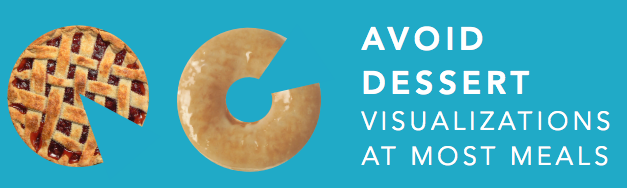
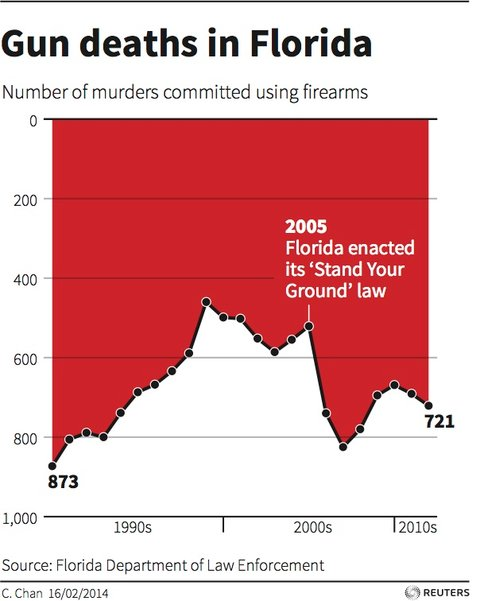
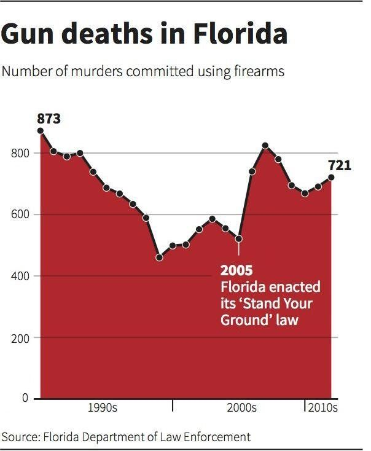

Gustavo A. Salazar
May 2018
## VIZBI
* International meeting on Visualizing Biological Data.
* **Diverse community**: bioinformaticians, data scientists,
computer scientists, and experimentalists, as well as medical
illustrators, graphic designers, and graphic artists.
* Running since 2010, alternating location between Heidelberg and
Cambridge MA and Sydney.
* Talks are by invitation only, but attendants can present posters,
which include a 1min flash-talk.
## VIZBI 2018
* Hosted at the Broad Institute of MIT and harvard.
* March 28 - 30
## VIZBI 2018 - Program
* Day 1:
* Keynote: User Experience design
* DNA
* RNA
* Day 2:
* Proteins
* Cellular Systems
* Keynote: Communicating Science Visually
* Day 3:
* Keynote: Data Visualization Principles
* Tissues & Organisms
* Populations & Ecosystems
User Experience design (Keynote)
Kim Goodwin
EMOTION + USABILITY + PURPOSE
IF YOUR DATA IS
ABOUT HUMANS,
MAKE IT HUMANE

User Experience design (Keynote)
Kim Goodwin
 
DESIGN TO ENSURE
ACCURATE INTERPRETATION
## DNA Section
*Cancer Genome Data (Marcin Imielinski)*

## DNA Section
*Functional Genomics (Aaron Wong)*

## DNA Section
*3D Genome Data (Nils Gehlenborg)*

## RNA Section
*RNA Structure & Dynamics (Joanna Trylska)*

## RNA Section
*RNA localization (Eric Lécuyer)*

## RNA Section
*RNA Expression (Kristin Ardlie)*

## Proteins Section
*Structure Databases (Sameer Velankar)*

## Proteins Section
*Protein Structure (Ivan Viola)*

## Proteins Section
*Molecular Representations (Jodie Jenkinson)*

## Cellular Systems
*Cellular Responses (Bree Aldridge)*

MTB and Drug combination effects.
## Cellular Systems
*Protein Localization Data (Devin Sullivan)*

## Cellular Systems
*Cellular Networks (Scooter Morris)*

Communicating Science (Keynote)
Drew Berry
DataViz Principles (Keynote)
Anders Ynnerman
## Tissues & Organisms
*Morphogenesis Data (Richard Smith)*

## Tissues & Organisms
*Human Anatomy (Lydia Gregg)*

## Tissues & Organisms
*Micro-CT Data (James Michaelson)*

## Populations & Ecosystems
*Microbiome Data (Antonio González Peña)*

## Populations & Ecosystems
*Geographic & Evolutionary Data (Daniel Janies)*

## Populations & Ecosystems
* Metagenomics Data (Patrick Chain)*

## Posters + Breakout sessions + Art & Biology
https://vizbi.org/Posters/2018/